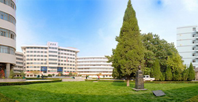
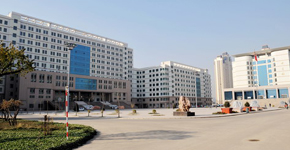
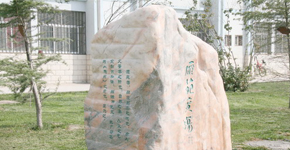
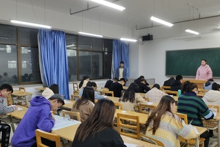
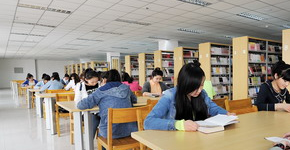
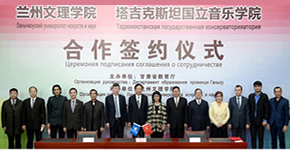

明德强能、励志笃行
兰州文理学院是甘肃省省属公办全日制普通本科高等学校，是甘肃省培养文化、传媒类人才的主体性高校，也是教育部学校规划建设发展中心“高等学校产教融合创新实验项目”全国5所项目院校之一。
| 学院概况 |
学院校训 |
| 历史沿革 |
学院标志 |
| 现任领导 |
校园全景 |

明德强能、励志笃行
按照省委、省政府确定的“建设一批服务文化大省建设的学科专业、培养一批服务文化大省建设的应用型人才、形成一批服务文化大省建设的理论成果”的指示，确立了“优化结构、强化特色、突出应用、提高质量”的办学方针。

| 文学院 |
新闻传播学院 |
旅游学院 |
经济管理学院 |
| 马克思主义学院 |
数字媒体学院 |
传媒工程学院 |
化工学院 |
| 教育学院 |
外语学院 |
美术与设计学院 |
音乐舞蹈学院 |
| 社会体育学院 |
艺术职业学院（甘肃省艺术学校） |
明德强能、励志笃行
学校有甘肃省动漫工程技术研究中心、戏曲人才培养与舞台剧目开发协同创新中心、西北民族文化与旅游发展研究中心等3个省级科研平台。建成115个校内实验室，12个实验教学中心，156个校外实习实训基地。
| 招生信息网 |
就业信息网 |
| 招生咨询 |
录取查询 |
| 雁苑微林众创空间 |
明德强能、励志笃行
学校聘请国家一级编导高金荣、国家工艺美术大师何鄂等行业领军人才为驻校专家，聘请文化大家余秋雨、中国艺术研究院原研究员周育德、中央民族乐团团长席强等46位各行业、各学科的高层次优秀人才担任特聘教授。
明德强能、励志笃行
学生在全国大学生数学建模竞赛、“挑战杯”、“用友杯”、“金蝶杯”、全国职业院校技能大赛、全国大学生英语口语大赛等技能大赛中屡创佳绩，先后荣获国家级奖50余项、省部级奖180余项。
| 学生管理 |
团旗飘飘 |
| 资助管理 |
思政在线 |
| 国防教育 |
学生社团 |
| 心理健康 |
高校之窗 |

明德强能、励志笃行
为进一步培养学生党员理论和思想意识，增强党组织凝聚力，我院于2019年10月24日晚上7:30在3-401举行院内党课知识选拔考试，最后将选出三人参加由校团委举办的“不忘初心，牢记使命”专题知识竞赛，参加本次考试的是我院学生党员和预备党员。本次考试以学习党史、新中国史作为

明德强能、励志笃行
兰州文理学院图书馆建筑面积27173平方米，提供阅览座位1800余个，馆藏纸质图书103.18万余册，订购在线资源30余种，建成了敦煌文献资源中心，是甘肃省首批古籍重点保护单位。

明德强能、励志笃行
兰州文理学院国际交流中心是学校对外合作与交流工作的归口管理和服务部门，全面负责学校对外合作交流。近年来学校已与美国、加拿大、德国、意大利、新西兰、丹麦、塔吉克斯坦等国多所大学和科研机构建立了合作交流关系。